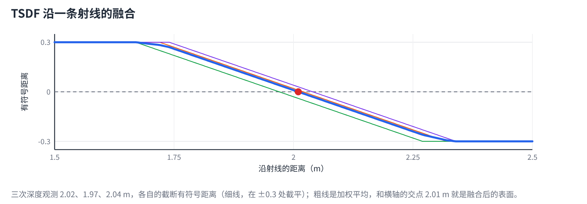
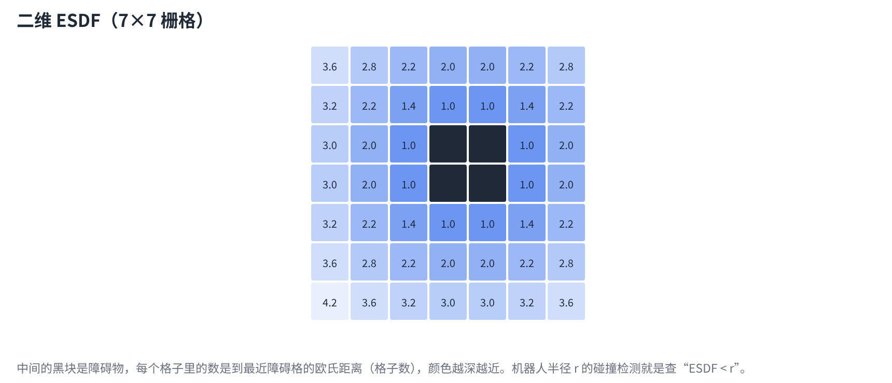
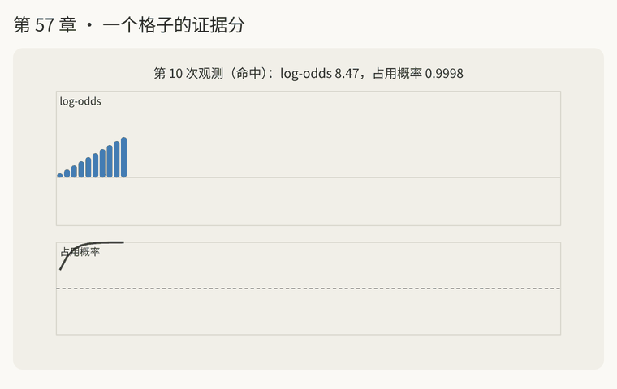

第 57 章 · 地图表示：占用栅格的 log-odds、TSDF / ESDF、八叉树
本地运行
git clone https://github.com/wikieden/math-and-eval-stats
cd math-and-eval-stats/code/notebooks
pip install jupyterlab torch numpy
jupyter lab ch57_maps.ipynb也可以下载后直接用 VS Code 打开 .ipynb 运行。需要 GPU 的章节在 Colab 里选「代码执行程序 → 更改运行时类型 → GPU」。
本章回答：激光一次次扫过同一个格子，占用概率怎么更新最省事？为什么要把概率夹在一个范围里？TSDF 怎么把很多帧带噪声的深度融合成一个光滑表面？规划为什么更想要 ESDF？三维地图怎么才不爆内存？
讲解日期：2026-11-25 · 上一章：第 56 章 VIO · 下一章：第 58 章 路径规划
对应原文：Voxbloxmath-and-eval-stats/materials/text/papers/voxblox-esdf-1611.03631.txt（TSDF 的加权平均更新式 (3) L206、TSDF 与 ESDF 的关系 L18–L24、§III–IV）；占用栅格的 log-odds 更新以 Särkkämath-and-eval-stats/materials/text/books/sarkka-bayesian-filtering-smoothing-2e.txt第 6 章的贝叶斯更新为基础
本章缩写：log-odds = log(p/(1 − p))（对数几率）；TSDF = Truncated Signed Distance Field（截断 / 有符号 / 距离场）；ESDF = Euclidean Signed Distance Field（欧氏有符号距离场）；τ = 截断距离；W = 融合权重；体素 = voxel（三维的像素）。全部缩写见 附录 · 缩写与术语表
讲解
第一步：占用栅格：log-odds 让贝叶斯更新变成加法（2026-11-25）
类比：给每个格子记“有东西”的证据分。 看到一次被打中加分，看到一次被穿过减分，分数换算成概率。
每个格子独立地做贝叶斯更新（第 8、20 章）。用对数几率 l = log(p/(1 − p))，更新变成加法：
l₀ 是先验（p = 0.5 时为 0）。
例子（命中时传感器模型 p = 0.7 → +0.847；穿过时 p = 0.4 → −0.405）：
| 观测 | 命中 | 命中 | 未命中 | 命中 |
|---|---|---|---|---|
| 占用概率 | 0.7000 | 0.8448 | 0.7840 | 0.8944 |
为什么要夹住：连续命中 20 次后 l 会非常大，环境变了（门开了）要很多次未命中才翻得过来。把 l 夹在 ±3.5（概率约 0.03–0.97）：命中 20 次后 0.9707，再未命中 3 次就降到 0.9075，能较快响应变化。
一句话：占用栅格每个格子存 log-odds，命中加、穿过减；夹住上下限让地图能跟上环境变化。
第二步：TSDF：带权平均出一个光滑表面（2026-11-25）
类比：几个人各自估一面墙在哪，取加权平均。
每个体素存“到最近表面的有符号距离”（表面前为正、后为负），只在表面附近 ±τ 内存（截断）。每来一帧深度，沿射线更新（Voxblox 式 (3)，L206）：
表面就是 D = 0 的位置（零交叉）。
例子（一条射线上 3 次深度观测 2.02、1.97、2.04 m，权重相同）：融合后零交叉在 2.0100 m，正好是平均。
噪声被平均掉（N 次观测标准差降到 1/√N）；截断让远离表面的体素不用存。

图 57-1 · 横轴沿射线的距离，三条细线是三次观测各自的截断距离（在 ±0.3 处截平），粗线是加权平均，和横轴的交点就是融合后的表面 2.01 m一句话：TSDF 每个体素存截断的有符号距离，多帧按权重平均，零交叉就是表面。
第三步：ESDF：规划要的是“离障碍物多远”（2026-11-25）
TSDF 只在表面附近有值，而且是沿射线的距离（不是真正的最近距离）。规划和碰撞检测需要每个空闲位置到最近障碍物的欧氏距离，并且最好有梯度（往哪走离障碍物更远）：ESDF。
例子（7×7 栅格、中间 2×2 障碍物，单位是格子）：
| 行 | 距离 |
|---|---|
| 0 | 3.61, 2.83, 2.24, 2.00, 2.00, 2.24, 2.83 |
| 1 | 3.16, 2.24, 1.41, 1.00, 1.00, 1.41, 2.24 |
| 2 | 3.00, 2.00, 1.00, 0, 0, 1.00, 2.00 |
Voxblox（L18–L24）从 TSDF 增量地算 ESDF（波前传播），只更新变化的区域。有了 ESDF，“机器人半径 r 的碰撞检测”就是查 ESDF < r，轨迹优化可以直接用它的梯度把路径推离障碍物（第 58 章）。

图 57-2 · 7×7 栅格的距离场，颜色越深离障碍物（中间黑块）越近；等距线是一圈圈的圆角矩形一句话：ESDF 存每个空闲位置到最近障碍物的欧氏距离，碰撞检测查表、轨迹优化用梯度。
第四步：体素与八叉树：只细分有东西的地方（2026-11-25）
稠密体素的数量随分辨率立方增长；而真正有信息的只是表面附近一层。八叉树：每个节点要么是叶子（整块都是空 / 都是占），要么分成 8 个子节点，只在表面附近一路细分下去。
例子（4 m 的立方体里一个半径 1 m 的球面）：
| 分辨率 | 稠密体素 | 球面附近的格子 | 倍数 |
|---|---|---|---|
| 0.1 m | 64,000 | 约 1,256 | 51 |
| 0.05 m | 512,000 | 约 5,026 | 102 |
| 0.02 m | 8,000,000 | 约 31,415 | 255 |
分辨率每提高一倍，稠密存储 ×8、表面只 ×4，差距越拉越大。OctoMap 是八叉树 + log-odds；Voxblox 用固定大小的体素块 + 哈希表（只分配有观测的块）。语义地图则在每个格子 / 体素里再存类别分布或语言特征（第 65 章的 VLMaps）。
场景代码：OctoMap 的 Python 绑定（真实库接口；本书环境没装，没跑过）：
import octomap
tree = octomap.OcTree(0.05) # 5 cm 分辨率
tree.insertPointCloud(points, origin, maxrange=10.0) # 沿每条射线：终点 +log-odds、经过的格子 −log-odds
occ = tree.isNodeOccupied(tree.search(np.array([1.0, 0.0, 0.5])))
一句话：体素数随分辨率立方增长而表面只按平方，八叉树和体素哈希只存有东西的地方。
动画演示：一个格子的证据分

可交互版：animations/57-maps.html（滑块调观测次数；勾选“夹住 ±3.5”）。
怎么看：
- 上方是一串观测（前 20 次命中，后面全是未命中），柱子是 log-odds，下方曲线是占用概率（第一步）；
- 不夹：log-odds 一路涨到 17，之后要 40 多次未命中才降回 0.5；
- 夹住 ±3.5：上限被卡住，未命中开始后几次就明显下降。
练习与作答记录
题 1（第一步）：先验 p = 0.5，命中 p = 0.8、未命中 p = 0.3。观测序列“命中、未命中、未命中”后的概率是多少？
作答：（待作答）
题 2（第二步）：同一个体素已经融合了 4 次观测（W = 4、D = 0.05），新来一次 d = −0.05、w = 1，更新后 D 是多少？
作答：（待作答）
题 3（第四步）：分辨率从 0.05 m 提到 0.025 m，稠密体素和表面附近的格子各变成原来的几倍？
作答：（待作答）
口诀
占用格子记证据分，log-odds 命中加、穿过减，夹住才能跟变化；
TSDF 截断有符号距离，多帧加权平均，零交叉是表面；
ESDF 离障碍多远，碰撞查表、梯度推开；
稠密按立方、表面按平方，八叉树只细分有东西的地方。
本章复习卡片
ST186（占用栅格的 log-odds 更新与夹紧）、ST187（TSDF 的加权融合与 ESDF）、ST188（八叉树 / 体素哈希的存储账）。练习做完后，按答错、卡住的地方补上。
附录 · 延伸阅读
留给以后深入学习用，不影响本章主线。★ 是建议先读的。
推荐阅读
| 读什么 | 读哪里 | 读它为了什么 |
|---|---|---|
| ★ Voxblox（Oleynikova 2017） | §III（TSDF，式 (3) L206）、§IV（ESDF） | 增量的 TSDF 与 ESDF |
| Thrun《Probabilistic Robotics》（本地未归档） | 第 9 章 占用栅格 | log-odds 的推导 |
| 第 20 章 状态估计 | 第一步 | 贝叶斯更新 |
| 《机器人软硬件架构》第 8 章 自主栈 | 地图部分 | 系统里的地图层 |
| 《从零学 ROS 2》第 17 章 Nav2 | 代价地图 | 2D 代价地图怎么用 |
数学原理
- log-odds 的加法：贝叶斯 p(m|z₁:t) ∝ p(z_t|m)p(m|z₁:t−1)，两边取对数几率，独立观测的似然比相加。
- 加权平均 = 高斯融合：若每次观测是方差 1/w 的高斯，融合就是逆方差加权（第 61 章）。
- 零交叉的线性插值：x* = x_i − D_i(x_{i+1} − x_i)/(D_{i+1} − D_i)。
- 距离变换：每个格子到障碍集合的最小欧氏距离；可分离成按行、按列的一维变换，O(n) 计算。
公式清单
| 公式 | 意思 |
|---|---|
| \(l \leftarrow l + \log\frac{p}{1-p} - l_0\) | log-odds 更新 |
| \(p = 1 - 1/(1 + e^l)\) | log-odds → 概率 |
| \(D \leftarrow (WD + wd)/(W + w)\) | TSDF 融合 |
| \(\text{ESDF}(x) = \min_{o\in\text{障碍}}\|x - o\|\) | 距离场 |
代码对照：把本章的数字用代码算一遍
代码在仓库本地
math-and-eval-stats/solutions/chapter-code/ch57_maps.py，配套测试tests/test_ch57.py：
bash cd math-and-eval-stats/solutions/chapter-code uv run python ch57_maps.py uv run pytest tests/test_ch57.py
讲义 ↔ 代码：
| 讲义 | 公式 | 写法 | 跑出来 |
|---|---|---|---|
| 第一步 log-odds | 加法 + 夹紧 | occupancy_sequence([1, 1, 0, 1]) |
0.7 … 0.8944 |
| 第二步 TSDF | 加权平均 | tsdf_fuse(depths, w, xs)、zero_crossing |
2.0100 m |
| 第三步 ESDF | 距离变换 | esdf_2d() |
7×7 距离表 |
| 第四步 八叉树 | 体积 vs 面积 | octree_vs_dense(res) |
51、102、255 倍 |
关键几行：
l += logit(p_hit) if o else logit(p_miss); l = float(np.clip(l, -clamp, clamp)) # log-odds 更新 + 夹紧
num += w * np.clip(d - xs, -trunc, trunc); den += w # TSDF 加权累积
return distance_transform_edt(~occ) # 每个空闲格到最近障碍物的距离
代码里才看得到的 3 件事：
- 只更新了一个格子：整张栅格要沿每条激光射线做 Bresenham 遍历（经过的格子减、终点加），留给自己做（里程碑 ME-M34）。
- TSDF 只在一条射线上：真实系统里每个体素收到的是不同射线的观测，权重常按深度或入射角调整。
- 八叉树的格子数是估算：用球面积 / 分辨率²，没有真的建树；真实八叉树还有内部节点的开销。
自己改一改（不影响练习答案）：
- 把
occupancy_sequence的夹紧上限改成 2，命中 20 次后再未命中几次能降到 0.5 以下？ - 给
tsdf_fuse的三次观测加不同权重 [1, 1, 4]，零交叉变成多少？